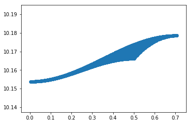

Calculate optimal extraction error due to cross-dispersion shift¶
Gaussian input¶
In [1]:
%pylab inline --no-import-all
matplotlib.rcParams['image.origin'] = 'lower'
matplotlib.rcParams['image.interpolation'] = 'nearest'
FWHM = 2
sig=FWHM/2.35
flux = 1
x = np.arange(-5,5,1)
gaussian_model = flux*np.exp(-x**2/2./sig**2)/sig/np.sqrt(2.*np.pi)
plt.plot(x,gaussian_model)
plt.xlabel('Pixels')
plt.ylabel('Flux per pixel (1D only)')
Populating the interactive namespace from numpy and matplotlib
Out[1]:
Text(0,0.5,u'Flux per pixel (1D only)')

Construct gaussian matched filter, offset by some amount¶
In [20]:
offset = 0.1
matched_filter = np.exp(-(x-offset)**2/2./sig**2)/sig/np.sqrt(2.*np.pi)
matched_filter /= np.sum(matched_filter**2)
print("Testing matched filter: measured:",np.sum(gaussian_model*matched_filter)," input: ",flux)
('Testing matched filter: measured:', 0.99677660015688285, ' input: ', 1)
In [21]:
matched_filter = np.exp(-(x-offset)**2/2./sig**2)/sig/np.sqrt(2.*np.pi)
print np.sum(matched_filter**2)
0.331882884126
Do this for a range of offsets¶
In [3]:
offsets = np.arange(0.0,2.,0.1)
measured_values = np.zeros(len(offsets))
for i in range(len(offsets)):
offset = offsets[i]
matched_filter = np.exp(-(x-offset)**2/2./sig**2)/sig/np.sqrt(2.*np.pi)
matched_filter /= np.sum(matched_filter**2)
measured_values[i] = np.sum(gaussian_model*matched_filter)
plt.plot(offsets,measured_values/flux)
plt.xlabel("Pixel offset")
plt.ylabel("Fraction of recovered flux")
mf = np.exp(-(offsets)**2/2./sig**2/2.)
plt.plot(offsets,mf)
Out[3]:
[<matplotlib.lines.Line2D at 0x10ca1cc90>]

Do this in 2D¶
In [4]:
from scipy.special import erf
size = 12
# add some static offset to reflect arbitrary sampling
_x = np.arange(size)-size//2+0.1
_y = np.arange(size)-size//2+0.4
_x, _y = np.meshgrid(_x, _y)
sigma = 2./2.35
psflet = (erf((_x + 0.5) / (np.sqrt(2) * sigma)) - \
erf((_x - 0.5) / (np.sqrt(2) * sigma))) * \
(erf((_y + 0.5) / (np.sqrt(2) * sigma)) - \
erf((_y - 0.5) / (np.sqrt(2) * sigma)))
psflet /= np.sum(psflet)
psflet*=flux
plt.imshow(psflet)
print psflet[psflet/np.amax(psflet)>0.5]
f = psflet[psflet/np.amax(psflet)>0.5]
f /= np.sum(f)
print f
print (np.sum(f**2))
[ 0.09560103 0.15640978 0.10811484 0.17688322]
[ 0.17802505 0.29126107 0.20132785 0.32938603]
0.265553988831

In [5]:
offsets = np.arange(0.0,2.,0.1)
measured_values_psflet = np.zeros(len(offsets))
for i in range(len(offsets)):
offset = offsets[i]
matched_filter = (erf((_x + 0.5-offset) / (np.sqrt(2) * sigma)) - \
erf((_x - 0.5-offset) / (np.sqrt(2) * sigma))) * \
(erf((_y + 0.5) / (np.sqrt(2) * sigma)) - \
erf((_y - 0.5) / (np.sqrt(2) * sigma)))
matched_filter /= np.sum(matched_filter)
matched_filter /= np.sum(matched_filter**2)
measured_values_psflet[i] = np.sum(psflet*matched_filter)
plt.plot(offsets,measured_values_psflet/flux)
plt.xlabel("Pixel offset")
plt.ylabel("Fraction of recovered flux")
plt.plot(offsets,measured_values)
plt.legend(["2D PSFLet fit","1D Gaussian fit"])
# mf = np.exp(-(offsets)**2/2./sig**2/2.)
#plt.plot(offsets,mf)
Out[5]:
<matplotlib.legend.Legend at 0x1157cfbd0>

Study the number of effective detector pixels¶
In [6]:
%pylab inline --no-import-all
matplotlib.rcParams['image.origin'] = 'lower'
matplotlib.rcParams['image.interpolation'] = 'nearest'
from scipy.special import erf
def psf(fwhm=2.,dx=0.,dy=0.,sizex=10,sizey=10):
_x = np.arange(sizex)-sizex//2+dx
_y = np.arange(sizey)-sizey//2+dy
_x, _y = np.meshgrid(_x, _y)
sigma = fwhm/2.35
psflet = (erf((_x + 0.5) / (np.sqrt(2) * sigma)) - \
erf((_x - 0.5) / (np.sqrt(2) * sigma))) * \
(erf((_y + 0.5) / (np.sqrt(2) * sigma)) - \
erf((_y - 0.5) / (np.sqrt(2) * sigma)))
return psflet/np.sum(psflet)
Populating the interactive namespace from numpy and matplotlib
In [7]:
plt.imshow(psf(sizey=10,sizex=20))
Out[7]:
<matplotlib.image.AxesImage at 0x1158f1c10>

In [8]:
dy=0.5
dxmin = 0.5
microspec = psf(sizey=10,sizex=20,dy=dy,dx=dxmin)
dxlist = np.arange(dxmin)
plt.imshow(microspec)
plt.colorbar()
Out[8]:
<matplotlib.colorbar.Colorbar at 0x115a08d50>

Equivalent noise pixel computation for matched filtering¶
In [12]:
dy=0.2
dxmin = 0.2
p = psf(sizex=100,sizey=100,dy=dy,dx=dxmin)
p[p<np.amax(p)/2.]=0.0
print(np.sum(p)**2/np.sum(p**2))
V = np.sum(p)
sharpness = np.sum(p**2/V**2)
beta = 1./sharpness
print beta
2.90257591762
2.90257591762
In [15]:
N = 10000
vals=np.zeros(N)
dxlist = np.zeros(N)
dylist = np.zeros(N)
for i in range(N):
dylist[i] = np.random.uniform(-0.5,0.5)
dxlist[i] = np.random.uniform(-0.5,0.5)
p = psf(sizex=20,sizey=20,dy=dylist[i],dx=dxlist[i])
#p[p<np.amax(p)/2.]=0.0
vals[i] = 1./np.sum(p**2)
In [16]:
plt.scatter(np.sqrt(dylist**2+dxlist**2),vals)
# do colorgrid
Out[16]:
<matplotlib.collections.PathCollection at 0x115e5add0>
